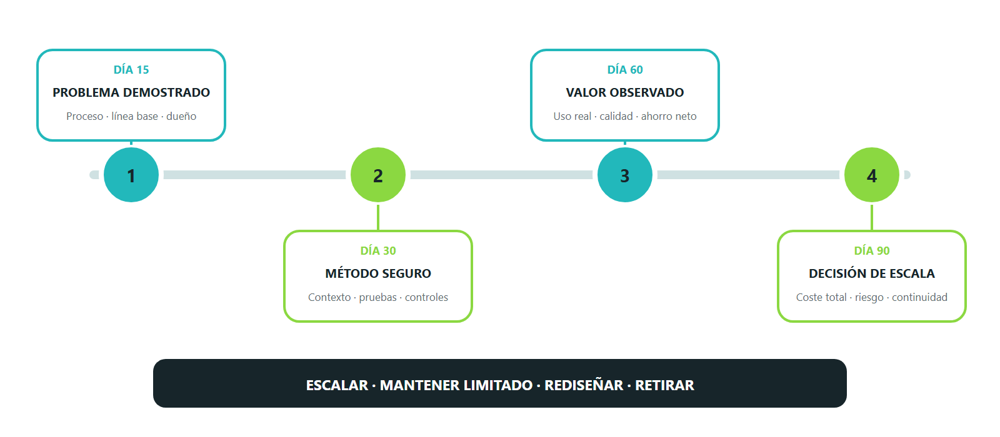

El plan no avanza por calendario, sino por evidencia. Cada puerta debe registrar entregables, métricas, riesgos, decisión, responsable y condiciones para el siguiente tramo.
No existe una quinta opción
Al día 90 las opciones son escalar, mantener limitado, rediseñar o retirar. “Seguir probando” sin una hipótesis nueva no es una decisión.
Progreso esencial: 0%
Los cambios se guardan en este navegador

Las puertas reducen incertidumbre y obligan a decidir con evidencia acumulada.
Cierra el piloto conservando la ficha del proceso, la línea base, el paquete ContextOS, el conjunto de pruebas, las métricas y el acta de decisión. Eso convierte la experimentación en capacidad organizativa.